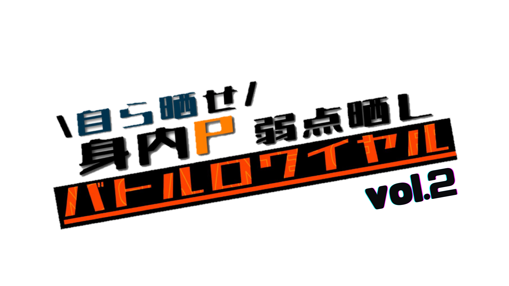
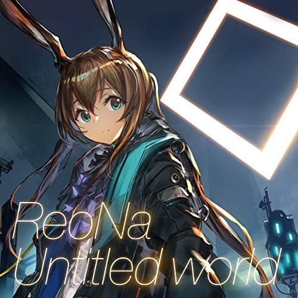
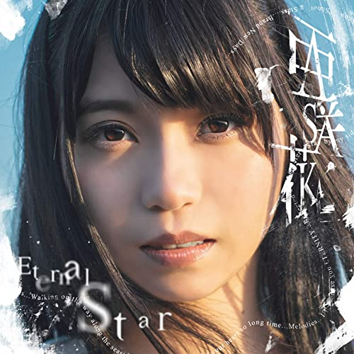

イベントロゴ

- - - ランキング - - -
10位
Girl meets Love
片霧烈火 & 鈴湯
18ADVの中でトップで好きな曲。
ゲームOPもすき
9位
Shining Harmony
P*Light & Massive New Krew
TANO*Cでハードコア入れられる曲がこれだった。
MassiveとPの合作とか最高過ぎませんか？？？
というか二人とも歌ウマいのずるくない？
8位

Untitled world
ReoNa
ArknightsのAMV曲。
アクナイのビデオはいいのしかないので見ようね
ﾌﾛｽﾄﾉｳﾞｧ...
7位
Happy… Good day! feat. ド葛本社
DJ Genki
にじさんじのド葛本社が歌ってます（にじ詳しくない）
DJ GenkiはVに楽曲提供してくれるからみんなも聴こうね
UKハードとレクイエム系好きな人にはお勧め
𝓡𝓮𝓺𝓾𝓲𝓮𝓶...
6位
Clear Morning
小倉唯
最近聴いた曲で上位に入ってしまった曲。
声優追ってないから曲とか知らなかったけど、ブルアカ挿入歌として聴いたときびっくり。
声優もEDM調の曲で歌うんですね...
5位

Eternal Star English ver.
亜咲花
ISLANDのED曲として収録されたこの曲。
正直この曲聴くためにアニメ見てたまである
4位

きみの名前
藤川千愛
盾の勇者の成り上がりのED曲。アニメの内容としっかりマッチしていて、且つ主人公やヒロインの感情が歌詞に込められている。
もう一つのED「あたしが隣にいるうちに」もいい曲なのでお勧めです。
3位
STEP
ClariS
ClariS
2位

Dreaming Days
hololive IDOL PROJECT
ホロライブの1st Live「Bloom,」で歌唱されたオリジナル楽曲。
アイドルらしい曲調でありながら、仲間と（YAGOOの）夢を叶える為に努力する様子が歌詞になっている。
歌詞の所々に今までホロメンたちが歌ってきた曲のフレーズや曲名が散りばめられてますすごいです
1位
METEOR
DIVELA
DIVELAさんの処女作。敢えて電子音を残したミクの声、ミクの声しかしないパート作る所や純真無垢さのある曲初めてでこんな曲作れるのどうかしてますよ
殿堂楽曲

BATTLE NO.1

ファイナルレター
FIN4LE ～終止線の彼方へ～
Freesia

朝焼けのスターマイン